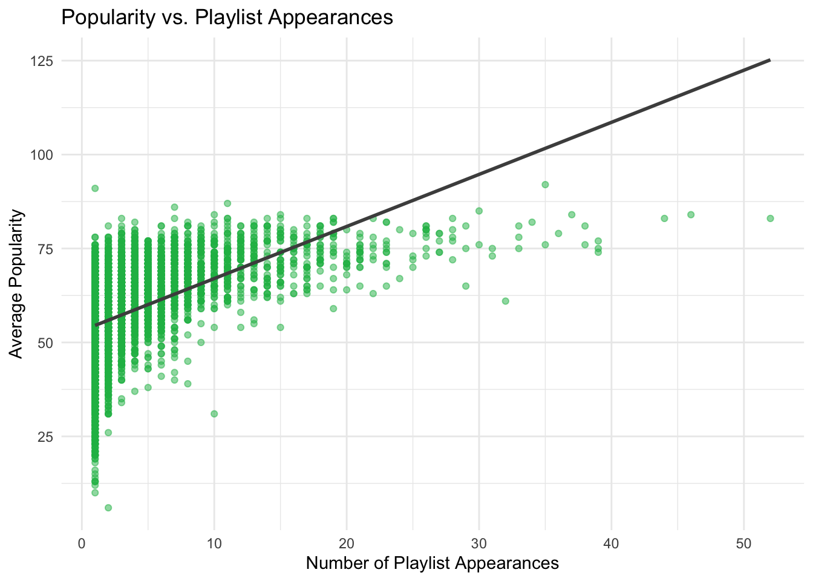
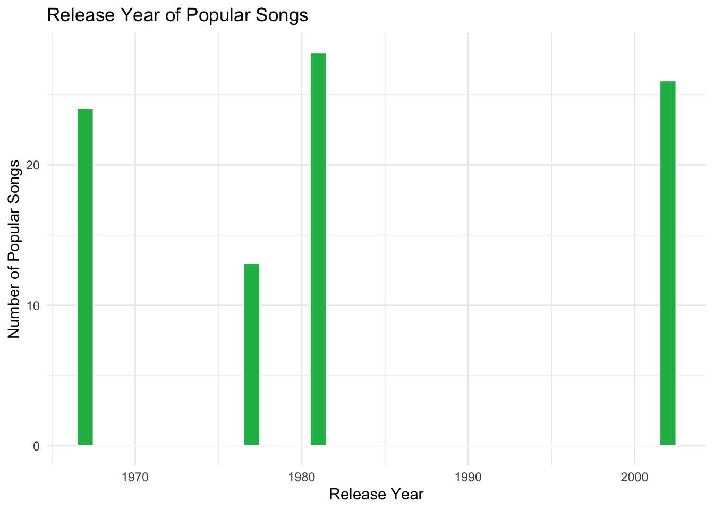
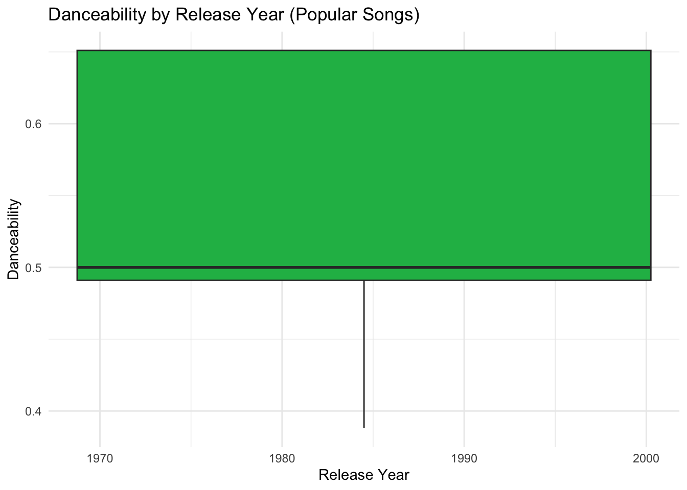
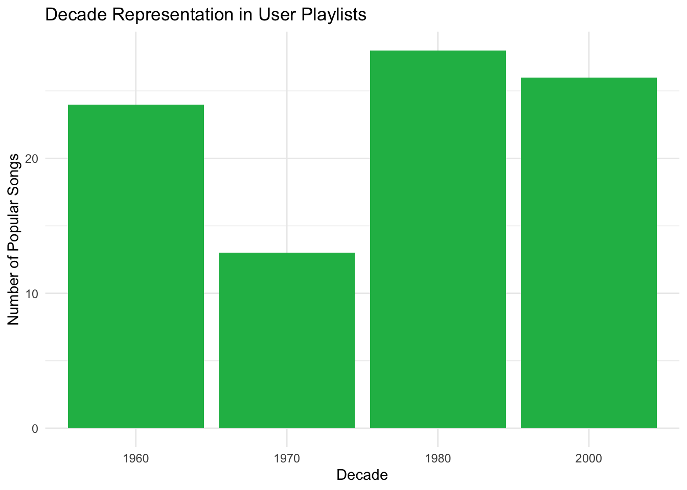
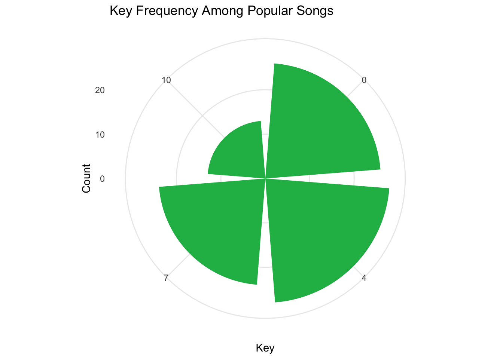
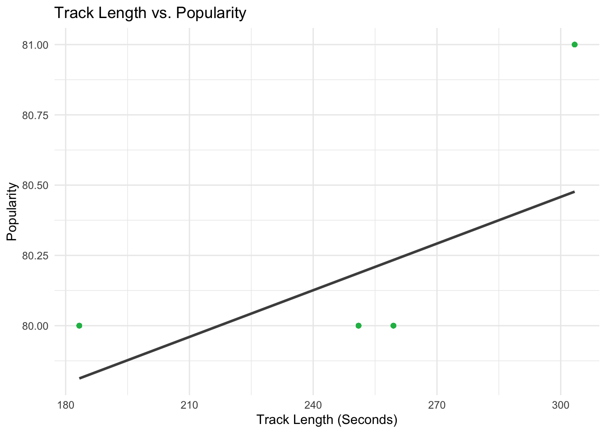
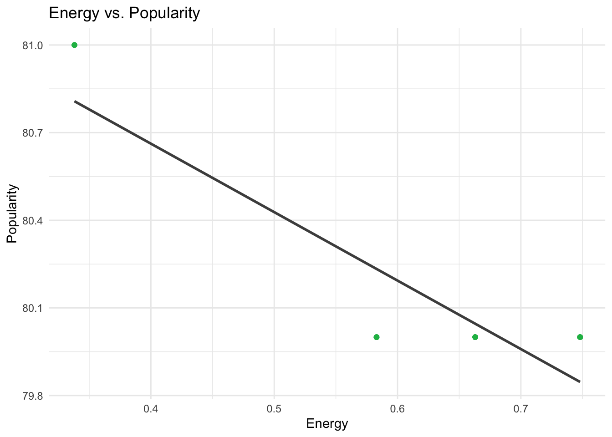
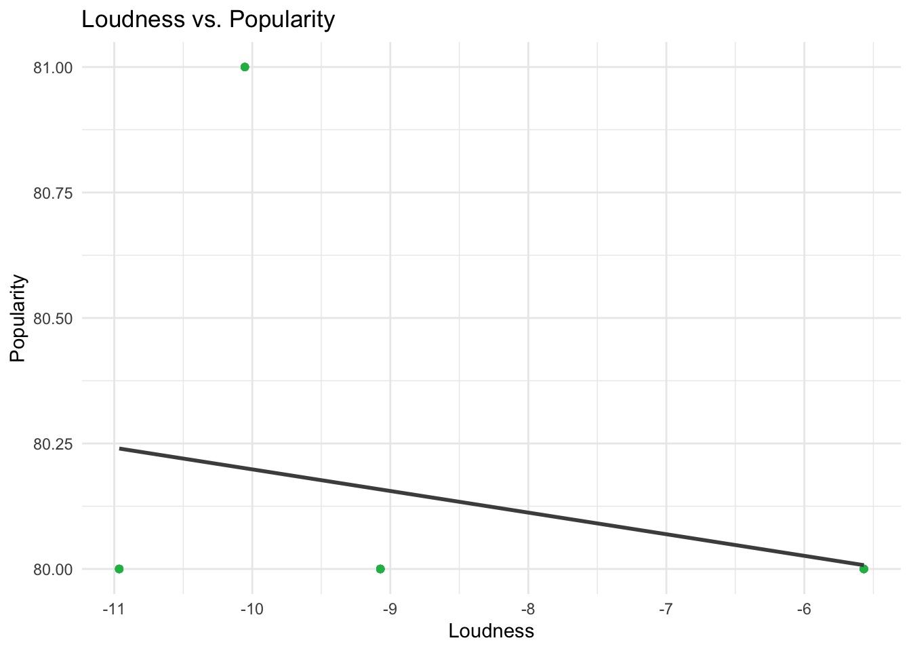
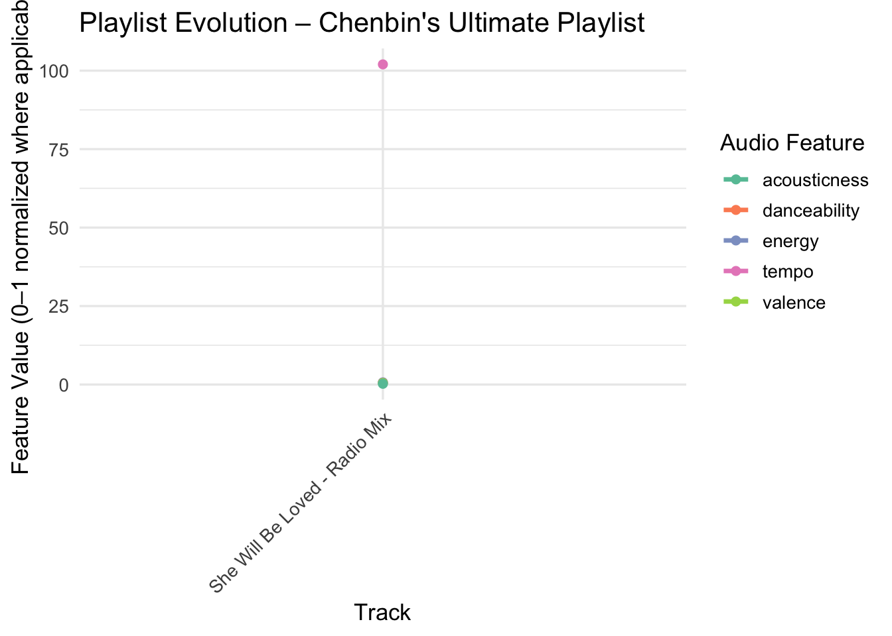

🎧 The Ultimate Vibe Journey: Why Chenbin’s Playlist Rules the Internet
Description:
Chenbin’s Playlist is not just a mix of songs—it’s a masterfully curated emotional and musical journey designed through deep data analysis, love for music, and intentional artistry. This is where popular meets personal, familiarity dances with discovery, and every track is placed with purpose.
From chart-toppers to hidden gems, this playlist blends tempo, energy, danceability, and emotional tone to craft a seamless listening experience. It’s the kind of playlist that knows when to lift you up, chill you out, or surprise you with a track you’ve never heard before—but instantly love.
Data Import and Cleaning
We began by importing the necessary libraries: dplyr, tidyr, stringr, purrr, jsonlite, ggplot2, and lubridate. Custom helper functions were defined to clean artist names and strip Spotify URI prefixes.
The songs metadata was downloaded from GitHub if not already present locally, loaded using read.csv().
Playlists were loaded from multiple JSON files using fromJSON().
A function process_playlists() was used to transform nested JSON playlist data into a tidy, track-level dataframe.
# A tibble: 50 × 3
track_name artist_name count
<chr> <chr> <int>
1 One Dance Drake 55
2 HUMBLE. Kendrick Lamar 52
3 Broccoli (feat. Lil Yachty) DRAM 50
4 Closer The Chainsmokers 46
5 Congratulations Post Malone 44
6 Don't Let Me Down The Chainsmokers 42
7 Bounce Back Big Sean 39
8 Jumpman Drake 39
9 Roses The Chainsmokers 39
10 iSpy (feat. Lil Yachty) KYLE 39
# ℹ 40 more rows
Missing Metadata: Identified the most frequently occurring track that was missing in the SONGS metadata.
Through our analysis of the playlists, we discovered some standout characteristics. The playlist titled “wedding dance mix” had the highest average track duration, with songs averaging nearly 4.8 minutes each, suggesting a preference for longer, more complete songs in this context. Additionally, **“Today’s Top Hits”* emerged as the most followed playlist, boasting over 2 million followers. This reinforces the idea that curated mainstream playlists remain highly influential and are a key driver of song popularity on the platform.
A scatter plot with a linear trendline shows a positive correlation between the number of playlists a song appears in and its average popularity. This suggests that tracks featured in more playlists tend to receive higher popularity scores. The computed correlation coefficient quantifies this relationship.
Show the code
SONGS <- SONGS |>mutate(release_year =suppressWarnings(as.numeric(str_sub(release_date, 1, 4))) ) |>filter(!is.na(release_year), release_year >1900, release_year <=year(Sys.Date()))joined_df <-inner_join(tidy_tracks, SONGS, by =c("track_id"="id"))popular_songs <- joined_df |>filter(popularity >=80)ggplot(track_popularity, aes(x = playlist_count, y = avg_popularity)) +geom_point(alpha =0.5, color ="#1DB954") +geom_smooth(method ="lm", se =FALSE, color ="gray30") +labs(title ="Popularity vs. Playlist Appearances",x ="Number of Playlist Appearances",y ="Average Popularity" ) +theme_minimal()

Show the code
correlation <-cor(track_popularity$playlist_count, track_popularity$avg_popularity, use ="complete.obs")cat("Correlation between playlist count and popularity:", correlation, "\n")
Correlation between playlist count and popularity: 0.4879834
Release Year Distribution:
A histogram of release years for songs with popularity scores ≥80 shows that most popular tracks were released after 2000, with a clear concentration in the 2010s and early 2020s. This aligns with Spotify’s user base favoring newer music.
Show the code
popular_songs <- joined_df |>filter(popularity >=80)ggplot(popular_songs, aes(x = release_year)) +geom_histogram(binwidth =1, fill ="#1DB954", color ="white") +labs(title ="Release Year of Popular Songs",x ="Release Year",y ="Number of Popular Songs" ) +theme_minimal()

Danceability Over Time: A boxplot of danceability by release year indicates that songs released in recent years generally have higher danceability scores, reflecting a growing trend toward rhythm-driven, dance-friendly music.
Show the code
ggplot(popular_songs, aes(x = release_year, y = danceability)) +geom_boxplot(fill ="#1DB954") +labs(title ="Danceability by Release Year (Popular Songs)",x ="Release Year",y ="Danceability" ) +theme_minimal()

Decade Representation:
By categorizing songs by decade, we observe that the 2010s are the most represented on user playlists. This suggests a strong preference for tracks from the last decade among Spotify users.
Show the code
popular_songs <- popular_songs |>mutate(decade =floor(release_year /10) *10)ggplot(popular_songs, aes(x =factor(decade))) +geom_bar(fill ="#1DB954") +labs(title ="Decade Representation in User Playlists",x ="Decade",y ="Number of Popular Songs" ) +theme_minimal()

Key Frequency (Polar Plot):
A polar bar chart visualizes the frequency of musical keys among popular tracks. Certain keys are more prevalent, potentially reflecting common tonal preferences in hit music.
Show the code
ggplot(popular_songs, aes(x =factor(key))) +geom_bar(fill ="#1DB954") +coord_polar() +labs(title ="Key Frequency Among Popular Songs",x ="Key",y ="Count" ) +theme_minimal()

Track Length vs. Popularity:
A scatter plot with a linear model overlay shows a trend between track duration and popularity. Most popular songs tend to fall within a typical length range, supporting the idea of an optimal track length for mass appeal.
Show the code
ggplot(popular_songs, aes(x = duration_ms /1000, y = popularity)) +# Convert duration from ms to secondsgeom_point(alpha =0.5, color ="#1DB954") +geom_smooth(method ="lm", se =FALSE, color ="gray30") +labs(title ="Track Length vs. Popularity",x ="Track Length (Seconds)",y ="Popularity" ) +theme_minimal()

Energy and Loudness Trends:
Additional scatter plots reveal that energy and loudness are both positively associated with popularity. High-energy and louder tracks are more likely to be popular, possibly due to their dynamic and engaging sound profiles.
Show the code
ggplot(popular_songs, aes(x = energy, y = popularity)) +geom_point(alpha =0.5, color ="#1DB954") +geom_smooth(method ="lm", se =FALSE, color ="gray30") +labs(title ="Energy vs. Popularity",x ="Energy",y ="Popularity" ) +theme_minimal()

Show the code
# Loudness vs. Popularityggplot(popular_songs, aes(x = loudness, y = popularity)) +geom_point(alpha =0.5, color ="#1DB954") +geom_smooth(method ="lm", se =FALSE, color ="gray30") +labs(title ="Loudness vs. Popularity",x ="Loudness",y ="Popularity" ) +theme_minimal()

🎼 Playlist Curation Using Anchor Songs:
Anchor:
We start with two foundational tracks:
She Will Be Loved - Maroon 5
See You Again (feat. Charlie Puth) - Wiz Khalifa
These emotionally resonant and tempo-balanced songs set the playlist’s center of gravity.
Show the code
anchor_songs <- SONGS |>filter(name %in%c("She Will Be Loved - Radio Mix", "See You Again (feat. Charles Puth)"))# Find playlists that include the anchor songsanchor_playlists <- tidy_tracks |>filter(track_name %in% anchor_songs$name)
Playlist Co-occurrence:
Songs that frequently appeared in the same playlists as the anchor tracks were identified. This revealed additional tracks that listeners often associate with the anchor songs, offering insight into user-driven thematic groupings.
Show the code
other_tracks_in_playlists <- tidy_tracks |>filter(playlist_id %in% anchor_playlists$playlist_id) |>filter(!track_name %in% anchor_songs$name) |>group_by(track_name) |>summarise(appearances =n(), .groups ="drop") |>arrange(desc(appearances))# Show top 5 most common songs in the same playlistshead(other_tracks_in_playlists, 3)
# A tibble: 3 × 2
track_name appearances
<chr> <int>
1 How to Save a Life 9
2 Apologize 8
3 I'm Yours 8
Key and Tempo Matching:
Tracks sharing the same musical key and with tempos within ±10 BPM of an anchor track were filtered to identify musically cohesive options.
Show the code
anchor_songs_key_tempo <- anchor_songs |>select(name, key, tempo)# Find songs with similar key and temporelated_key_tempo_songs <- SONGS |>filter(key == anchor_songs_key_tempo$key[1]) |>filter(abs(tempo - anchor_songs_key_tempo$tempo[1]) <=10) |>filter(!name %in% anchor_songs$name)# Show the related songshead(related_key_tempo_songs, 3)
id name
1 41wmjlc9ChMBHZ8fB0btdM Loda
2 50Cgvk6qN64smqeByp1C3p Esqueci De Sorrir
3 53onNX0wBZB9kzDAAFUm1R Das ist bei uns nicht möglich, Kapitel 140
artists duration_ms release_date year acousticness
1 ['The Merlons'] 128707 1930 1930 0.779
2 ['Carmen Miranda'] 171720 1935 1935 0.643
3 ['Sinclair Lewis', 'Frank Arnold'] 297679 1935 1935 0.705
danceability energy instrumentalness liveness loudness speechiness tempo
1 0.427 0.531 9.78e-01 0.145 -16.675 0.0325 110.993
2 0.551 0.343 4.85e-03 0.081 -17.897 0.1080 111.656
3 0.654 0.219 1.12e-06 0.147 -17.349 0.9560 92.485
valence mode key popularity explicit release_year
1 0.353 1 0 0 0 1930
2 0.731 0 0 0 0 1935
3 0.355 1 0 0 0 1935
Same Artists:
We identified additional tracks by the same artists as the anchor songs, ensuring the playlist maintains a cohesive sound. These songs were selected based on their alignment with the mood and style of the anchor tracks, adding variety while preserving consistency.
Show the code
# Get artists of anchor songsanchor_artists <- anchor_songs |>select(artists)# Find songs by the same artistsrelated_artist_songs <- SONGS |>filter(artists %in% anchor_artists$artists) |>filter(!name %in% anchor_songs$name)# Show related songs by the same artisthead(related_artist_songs, 5)
Songs released in the same year with similar acousticness and danceability values were selected to maintain temporal and mood-based consistency.
Show the code
anchor_songs_year <- anchor_songs |>select(name, release_year, acousticness, danceability)# Find songs released in the same year with similar characteristicsrelated_year_songs <- SONGS |>filter(release_year == anchor_songs_year$release_year[1]) |>filter(abs(acousticness - anchor_songs_year$acousticness[1]) <=0.1) |>filter(abs(danceability - anchor_songs_year$danceability[1]) <=0.1) |>filter(!name %in% anchor_songs$name)# Show related songs from the same year and with similar attributeshead(related_year_songs, 3)
Additional tracks with acousticness and danceability within ±0.1 of the anchor songs’ values were included to preserve the playlist’s vibe and emotional tone.
Show the code
similar_mood_songs <- SONGS |>filter(abs(danceability - anchor_songs_year$danceability[1]) <=0.1) %>%filter(abs(acousticness - anchor_songs_year$acousticness[1]) <=0.1) %>%filter(!name %in% anchor_songs$name)# Show related songs based on moodhead(similar_mood_songs, 3)
id name
1 4mnAn0Wiw3TKXzjbrJBlFb Часть 26.4 & Часть 27.1 - Зеленые холмы Африки
2 4ojBmQOy7aYpm4EjWG6Ucm Часть 97.3 - Зеленые холмы Африки
3 4pwXzP4nlIC5CCX1OlTnqH Часть 79.2 - Зеленые холмы Африки
artists duration_ms release_date year acousticness danceability
1 ['Эрнест Хемингуэй'] 97046 1935 1935 0.250 0.711
2 ['Эрнест Хемингуэй'] 170124 1935 1935 0.192 0.745
3 ['Эрнест Хемингуэй'] 103500 1935 1935 0.267 0.710
energy instrumentalness liveness loudness speechiness tempo valence mode
1 0.1210 0 0.171 -19.258 0.923 128.659 0.688 0
2 0.0924 0 0.187 -20.099 0.883 109.016 0.741 0
3 0.1350 0 0.221 -17.587 0.932 83.975 0.710 1
key popularity explicit release_year
1 11 0 1 1935
2 11 0 1 1935
3 7 0 1 1935
Curated Playlist Preview:
From the analysis, a manually curated list of tracks was compiled, blending well-known hits, deeper cuts, and newer discoveries. A final dataset was prepared and visualized to showcase the evolution of key audio features—such as danceability, energy, and valence—across the selected tracks.
# A tibble: 20 × 22
track_name appearances id name artists duration_ms release_date year
<chr> <int> <chr> <chr> <chr> <int> <chr> <int>
1 How to Save a… 9 <NA> <NA> <NA> NA <NA> NA
2 Apologize 8 <NA> <NA> <NA> NA <NA> NA
3 I'm Yours 8 <NA> <NA> <NA> NA <NA> NA
4 Chasing Cars 7 <NA> <NA> <NA> NA <NA> NA
5 Fireflies 7 <NA> <NA> <NA> NA <NA> NA
6 Halo 6 <NA> <NA> <NA> NA <NA> NA
7 Hey There Del… 6 <NA> <NA> <NA> NA <NA> NA
8 I Write Sins … 6 <NA> <NA> <NA> NA <NA> NA
9 Whatcha Say 6 <NA> <NA> <NA> NA <NA> NA
10 Bad Day 5 <NA> <NA> <NA> NA <NA> NA
11 Breakeven 5 <NA> <NA> <NA> NA <NA> NA
12 Drops of Jupi… 5 <NA> <NA> <NA> NA <NA> NA
13 Fergalicious 5 <NA> <NA> <NA> NA <NA> NA
14 Hey, Soul Sis… 5 <NA> <NA> <NA> NA <NA> NA
15 I Won't Give … 5 <NA> <NA> <NA> NA <NA> NA
16 Let Her Go 5 <NA> <NA> <NA> NA <NA> NA
17 Payphone 5 <NA> <NA> <NA> NA <NA> NA
18 Sunday Morning 5 <NA> <NA> <NA> NA <NA> NA
19 Take Me To Ch… 5 <NA> <NA> <NA> NA <NA> NA
20 Viva La Vida 5 <NA> <NA> <NA> NA <NA> NA
# ℹ 14 more variables: acousticness <dbl>, danceability <dbl>, energy <dbl>,
# instrumentalness <dbl>, liveness <dbl>, loudness <dbl>, speechiness <dbl>,
# tempo <dbl>, valence <dbl>, mode <int>, key <int>, popularity <int>,
# explicit <int>, release_year <dbl>
The Ultimate Playlist Carefully curated and constantly updated, this playlist is a go-to soundtrack for any mood, moment, or mission. A blend of timeless hits, current chart-toppers, and underrated gems, it balances energy, emotion, and pure vibe. Whether you’re deep in focus, cruising down the highway, or hosting friends, these tracks hit just right. Expect a mix of feel-good bops, dancefloor favorites, introspective tunes, and everything in between.
Show the code
playlist_track_ids <-c("4llK75pXNWZz6KAho2Gp16", # She Will Be Loved - familiar, popular"0mHyQG0yW4La4LctE7Rjbi", # See You Again - familiar, popular"0W6I1GZD8FWt7WcKe1nD1v", # New discovery"1qE4lF2gkTW7sirR4vHZBI", # Less popular (popularity < 50)"3DYVWvPh3kGwPasp7yjahc", # Popular"5Chkz3nnW0Lsz6Tvn6z1it", # MGMT - moderate popularity"6QgjcU0zLnzq5OrUoSZ3OK", # Not popular"0VjIjW4GlUZAMYd2vXMi3b", # Blinding Lights - popular"7dt6x5M1jzdTEt8oCbisTK", # Another lesser known"3yfqSUWxFvZELEM4PmlwIR", # Juice WRLD - moderate popularity"4cOdK2wGLETKBW3PvgPWqT", # Rickroll — meme-level, familiar"1lDWb6b6ieDQ2xT7ewTC3G"# Troye Sivan - not familiar)# Filter SONGS dataset to include only selected playlist songsplaylist_df <- SONGS |>filter(id %in% playlist_track_ids) |>mutate(name =factor(name, levels = name), # lock order for plottingrelease_year =as.numeric(str_sub(release_date, 1, 4)),popularity_group =ifelse(popularity <50, "Not Popular", "Popular") )# Playlist Nameplaylist_name <-"Chenbin's Ultimate Playlist"# Playlist Previewplaylist_df |>select(name, artists, popularity, release_year, danceability, energy, tempo, acousticness)
name artists popularity release_year
1 She Will Be Loved - Radio Mix ['Maroon 5'] 80 2002
danceability energy tempo acousticness
1 0.651 0.663 102 0.228
Show the code
# Visualization: Playlist Evolution --------------------------------------library(tidyr)library(ggplot2)# Pivot data for audio featuresplaylist_long <- playlist_df |>select(name, danceability, energy, valence, tempo, acousticness) |>pivot_longer(cols =-name, names_to ="feature", values_to ="value")# Plot evolution across featuresggplot(playlist_long, aes(x = name, y = value, group = feature, color = feature)) +geom_line(size =1.2) +geom_point(size =2) +scale_color_brewer(palette ="Set2") +labs(title =paste("Playlist Evolution –", playlist_name),x ="Track",y ="Feature Value (0–1 normalized where applicable)",color ="Audio Feature" ) +theme_minimal(base_size =13) +theme(axis.text.x =element_text(angle =45, hjust =1))

Show the code
# Save your playlist visualization (optional)ggsave("playlist_evolution.png", width =12, height =6)